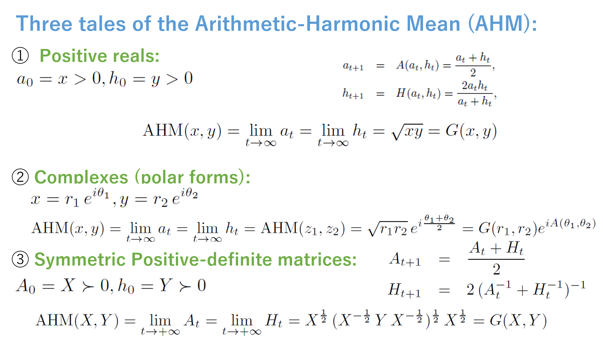
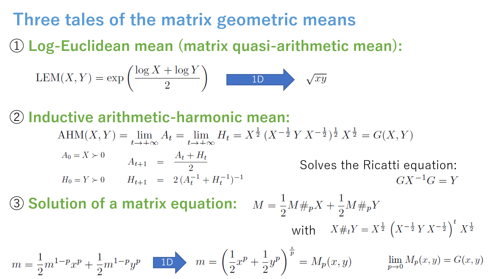
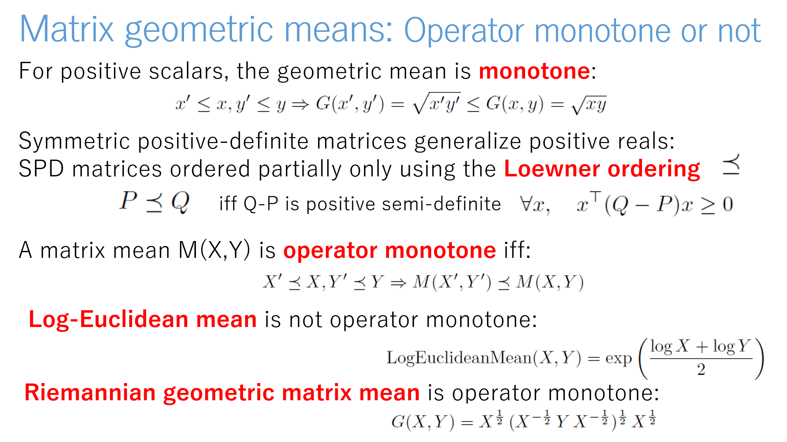

Matrix geometric means
(to be updated...)
Arithmetic-harmonic mean (AHM) = *inductive mean*
- Positive reals: AHM= geometric mean
- Complex numbers: AHM modulus = geometric mean, AHM argument = arithmetic mean
- Positive-definite matrices, AHM = Riemannian geometric mean (wrt trace metric)

Many ways to generalize scalar to matrix geometric means:
- Log-Euclidean mean (quasi-arithmetic mean) but not operator monotone
- Inductive arithmetic-harmonic mean
- Solution of a matrix equation yielding power means + taking limits

Matrix means and monotone operators:
